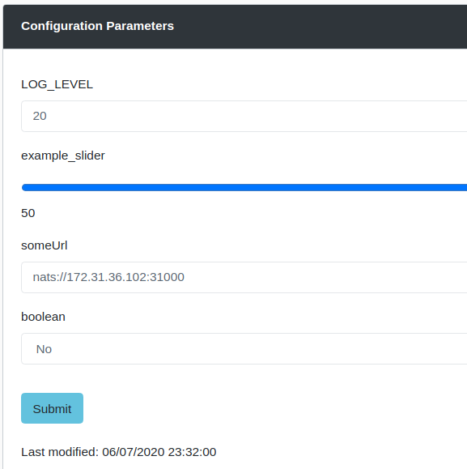
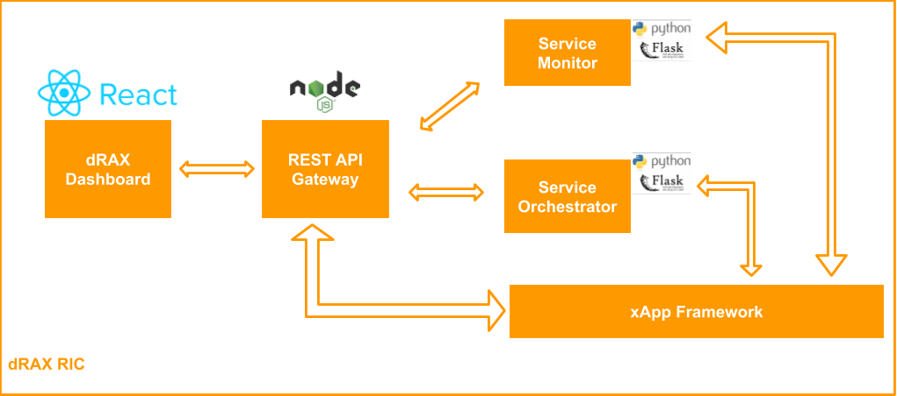

2. Documentation⚓︎
2.1 Introduction⚓︎
dRAX is Accelleran’s O-RAN aligned Cloud Native RAN platform. dRAX is cloud native by design and encompasses the O-RAN defined CU function, a Service Management and Orchestration (SMO) layer, as well as a near real-time RAN Intelligent Controller (RIC) platform. It features a micro-service oriented architecture with containerized functions orchestrated via Kubernetes and supports both 4G and 5G technologies.
The dRAX RIC platform is a Near Real-Time platform. It allows developers to implement xApps that can leverage dRAX near real-time open RAN data and communicate with other xApps to bring new services and functionalities. It offers seamless integration with other orchestration platforms and lowers the technology barrier to implement Enterprise cellular networks by implementing artificial intelligence techniques for the configuration and operation of private cellular networks. This document serves as the developers guide in creating and deploying xApps on the Accelleran dRAX.
To make the development and integration of xApps into dRAX as smooth as possible, we have created the dRAX xApp Framework. This framework consists of a number of predefined and pre-developed resources that can communicate with the rest of the entities within the dRAX RIC. This allows the framework to seamlessly integrate with dRAX on deployment. Using abstractions of the lower level details, the xApp Framework exposes easy to use methods which allows the developers to only focus on the functionality of their xApp.
The dRAX xApp Framework consists of the following components, which are shown on Figure 2:
- The xApp Library - a Python library which interfaces with the dRAX RIC platform
- The xApp Database - Redis server for storage of configuration data
- The xApp Core - the core logic of the xApp written by the developer
- The xApp Helm Chart - a Helm Chart used to deploy the xApp and integrate it with dRAX RIC
| Figure: dRAX xApps Framework |
2.2 Quick guide⚓︎
This section introduces you to a development sandbox called the xApp Dev Environment, which can be easily deployed on an existing dRAX installation, in order to gain familiarity with the capabilities of our xApp Framework. We have basically created a Hello-World example inside of the xApp Core using the xApp Library, built a Docker image and prepared a remotely available Helm Chart.
2.2.1 Deploy the xApp Dev Environment⚓︎
The xApp Dev Environment can be easily deployed in a user friendly way via the dRAX Dashboard. Open the dRAX Dashboard, and using the left hand side tabs navigate to: New Deployment -> xApp Deployment.
In the newly opened form, from the Method drop-down menu, select Deploy xApp Development Environment. Next, fill in the metadata fields, such as your xApps name, organization team, etc. The Version field indicates which version of the xApp Dev Environment to use. Leave this at “latest”, as this automatically picks the latest stable version of the xApp Dev Environment for your version of dRAX. Finally, the xApp Dev Environment also has the possibility to be accessed via ssh from remote. Therefore, you have to set the shh password which will be used in the Developer SSH Password field. Note: Enter a password between 7 to 15 characters which contains at least one numeric digit and a special character. Click the Submit button to deploy the xApp Dev Environment.
Accessing the xApp Dev Environment
Once you deploy the xApp Dev Env, you can check if all its pods are deployed. The xApp pods have a naming convention based on the metadata you provided: <organization>-<team>-<xapp_name>-<version>
This can be used to filter the pods in the kubectl command:
kubectl get pods
Once all the pods are in running state, you can access the xApp Dev Environment by using the following command:
You can now access the xApp Dev Environment by going into the container in Kubernetes. The xApp pods have a naming convention based on the metadata you provided: <organization>-<team>-<xapp_name>-<version>
When the xApp is deployed you will have 2 pods in Kubernetes:
- <organization>-<team>-<xapp_name>-<version>
- <organization>-<team>-<xapp_name>-<version>-xapp-redis
The xApp Core is located under the <organization>-<team>-<xapp_name>-<version> pod, so to access the development environment you can:
kubectl exec -it <pod_name> -- /bin/bash
2.2.2 Start the xApp in the development environment⚓︎
Finally you can start your xApp by issuing the following command inside the container:
python3 xapp_main.py
2.2.3 Edit the xApp⚓︎
The developer is free to edit the xapp_main.py and create other .py files. You can stop the currently running xapp_main.py, edit the files and restart the xApp again. This allows you to work in a sandbox environment, all fully integrated into dRAX, and focus only on the functionality you bring.
2.2.4 How to uninstall the xApp⚓︎
You can simply delete the xApp Dev Environment by clicking the Uninstall button on the xApp Overview page on the dRAX Dashboard. Navigate to xApp Management -> Overview.
NOTE: Please note that any changes will be lost once the sandbox deployment is removed. Therefore it is important to backup your work before deleting the xApp Dev Environment. In the xApp Dev Environment container, we have also pre-installed git, so you are free to use it to backup your code to a remote Git repository. In the following section we will explore how to move from the xApp Dev Environment to a productized xApp.
2.3 Development Workflows⚓︎
The xApp Dev Environment described in the Quick Guide section is a great way to quickly deploy the full xApp Framework, with the xApp Library in place and the xApp fully integrated into dRAX. In this section, we will explain the different workflows you can use in the development cycle.
2.3.1 Development in the container⚓︎
Once the xApp Dev Environment is deployed, you can access the xApp Dev Environment container as described in the Quick Guide section:
kubectl exec -it <pod_name> -- /bin/bash
As part of the xApp Dev Environment, we have pre-installed tools such as:
- vim
- nano
- Git
You are of course free to install any additional packages. This initial set should be enough to get you started in editing the xApp python files and backing up your code to Git. You can start the xApp by running:
python3 xapp_main.py
2.3.2 Using ssh to access container⚓︎
If for any reason you don’t have access to the dRAX host machine or the kubectl command, you can also access the xApp Dev Environment using ssh. First, discover which port is used on the host machine as the ssh port for your xApp Dev environment. You can do this by going to the dRAX Dashboard and navigating to xApps Management -> Overview. Find you xApp Dev Environment, and click the Show button under the Services column. You should see multiple services associated with your xApp, one of which should be the dev-ssh service. You will find the port on which this service is exposed under the NodePort column (it will be in the range of 30 000 - 32 000). You can now ssh into your xApp Dev Environment by using the IP of the dRAX host machine, the dev-ssh service nodePort, and the SSH Password set during the deployment of the xApp Dev Environment:
ssh -p <dev-ssh-nodeport> xapp@<drax-host-ip>
You now have access to the python files in the xApp Core which are located in _/home/xapp/xapp_core _inside the container. You can edit the python files and start the xApp as normal using:
python3 xapp_main.py
2.3.3 Using local IDE to edit xApp Dev Environment files⚓︎
As an xApp developer, it is often easier to develop the xApp in an IDE or user-friendly text editor. You may use a tool called sshfs to mount the files from the xApp Dev Environment container onto your local machine. This way you can edit the files locally in any text editor you want, and the changes will also take effect in the dRAX Dev Environment. Of course, you still need to access the xApp Dev Environment of ssh into it to actually start or stop the xApp!
You can install sshfs using the following command:
sudo apt install -y sshfs
Next create a folder where you will mount the remote files:
mkdir /path/to/xapp-dev-file
Finally use the sshfs command to mount the files:
sshfs -p <dev-ssh-node-port> xapp@<drax-host-ip>:/home/xapp/xapp_core /path/to/xapp-dev-files
The xapp_core files will now be available in the "xapp-dev-files" folder you just created.
NOTE: You still have to access the xApp Development Environment via kubectl or ssh into it in order to run the actual xApp with the "python3 xapp_main.py" command.
2.3.4 Using Visual Studio Code for an integrated development environment⚓︎
You can use Visual Studio Code to get an integrated development environment. Visual Studio Code has the "remote-ssh" extension which lets you connect to a remote ssh host, access the remote files in the user friendly text editor of VS Code, and have a terminal open to the remote host.
2.3.4.1 Install VS Code⚓︎
You can download the VS Code from: https://code.visualstudio.com/download
2.3.4.2 Install Remote-SSH in VS Code⚓︎
You need to install the remote-ssh extension in VS Code, and configure it to connect to your xApp Dev Environment (taking into account the ssh password and port used).
In the left hand menu, select the Extensions tab. Search for Remote-SSH and install the extension.
2.3.4.3 Adding the xApp Dev Environment as new SSH host⚓︎
Next, click F1 on the keyboard to open the Command Pallete (or VSCode -> View -> Command Palette). Now start typing "remote-ssh add new" and select the option that appears: "Remote-SSH: Add New SSH Host…".
Follow the instruction to enter the ssh command:
ssh -p <dev-ssh-port> xapp@<drax-host-ip>
You will be asked to supply a ssh config file. Since we will use the password for ssh, you can just pick the default one. Or if you know what you are doing, you can create or select your ssh config file.
2.3.4.4 Connecting to xApp Dev Environment⚓︎
You can now find the newly added host, or your xApp Dev Environment, in the “Remote Explorer” tab on the left. You will see the host and can click on it to connect. You will be asked for the ssh password in the process (you might be asked for the ssh password a couple of times which is normal).
2.3.4.5 Adding a SSH key to the xApp Dev Environment⚓︎
You can of course add your public ssh key to the xApp Dev Environment and then use that in the ssh config file of VS Code Remote-SSH, which makes the connection process easier. Of course you have to keep in mind that once the xApp Dev environment is deleted, all your data in the xApp Dev Environment including the ssh key will be deleted. When deploying a new xApp Dev Environment, you have to set up the ssh key again.
2.3.4.6 Troubleshooting⚓︎
There is a known issue if you try to connect to the remote xApp Dev Environment using the remote-ssh extension in VS Code. When you try to connect, you can get an error message:
“Could not establish connection to “10.8.0.1”: Downloading VS Code Server failed - please install either curl or wget on the remote”
To resolve it, you need to kill the VS Code server on the remote using the following command:
VSCode -> View -> Command Palette -> input "remote" -> Select Remote-SSH: Kill VS Code Server on Host…
You can then select the IP address of your xApp Dev Environment, and will be required to enter the ssh password. Once the process completes, reconnect to the remote ssh again and it should work this time.
2.4 Build your own xApp Dev Environment⚓︎
In certain use cases, the developer will need a more flexible approach than the xApp Dev environment. For example:
- Edit the xApp Helm Chart
- Add another Docker image to the xApp
- Add certain files or packages to the xApp Core
In such cases, deploying the xApp Dev Environment will not be sufficient, as you don’t have such options. However, in this case you can create your own xApp Core Docker image, including any additional files you need to it, as well as edit the default xApp Helm Chart to create one specific to your xApp, including any additional Docker images. You can then enable the Developer Mode on your own xApp to have the same options as in the xApp Dev Environment.
In the following subsection, we assume that you are on the dRAX host machine, so the Docker image built will already be present on the dRAX machine, as well as the helm chart.
2.4.1 Clone the xApp Framework Git repository⚓︎
To do so, you can first clone the xApp Framework GitHub repository:
git clone [https://github.com/accelleran/xapp-framework-package.git](https://github.com/accelleran/xapp-framework-package.git)
NOTE: You will need to contact Accelleran and provide a GitHub username so that we can grant you access to this repository.
2.4.2 Edit and build your xApp Core Docker image⚓︎
This repository contains the xApp Library, as well as an example on how to build your own xApp located in the _example _folder. To build your own xApp Core Docker image, we provide the default Dockerfile. There are two Dockerfiles:
- Dockerfile - Used to generate the production version of the xApp
- Dockerfile.dev - Used to generate the Development Environment version of your xApp
You can, therefore, edit the Dockerfile.dev according to you own needs and initiate a build by issuing the following command:
cd xapp-framework-package/example
sudo docker build -t my-xapp:0.1.0 --build-arg username=<GITHUB_USERNAME> --build-arg token=<GITHUB_TOKEN> -f Dockerfile.dev .
Here:
- my-xapp: This is the name of your xApp Docker image, which we will need to also provide to the Helm Chart;
- 0.1.0: This is the version of the Docker image. We follow the semver versioning, so we also advise you to do the same;
- <GITHUB_USERNAME>: Replace this with the GitHub username that has access to the xApp Framework GitHub repository.
- <GITHUB_TOKEN>: This is the security token of your GitHub account.
2.4.3 Prepare the xApp Helm Chart⚓︎
Once the Docker image is built, we need to prepare the xApp Helm Chart. The default xApp helm Chart is available in the example folder of the xApp Framework Git repository. Therefore, go to the following folder:
cd example/helm_chart/xapp
We need to edit the values.yaml file to point the xApp Helm Chart to use our previously built xApp Core Docker image. In our case the <xapp-name> is my-xapp, <xapp-version> is 0.1.0. Therefore, edit the values.yaml accordingly:
...
image:
repository: <xapp-name>
tag: "<xapp-version>"
...
You are of course free to now edit the xApp Helm Chart in any way you see fit, for example adding another Docker image to it, which we explain in the section How to add another microservice Helm Chart to the xApp.
2.4.4 Deploy your xApp in Developer Mode⚓︎
You can now deploy your xApp in Developer Mode, which will grant you the same options as the xApp Dev Environment. Your xApp will be deployed as a sandbox environment, which you can access, further develop and debug, start or stop the xApp, etc.
To do so, run the following command on the dRAX host machine:
helm install <xapp-name> /path/to/xAppHelmChartFolder --set developerMode.enabled=true --set-string global.kubeIp=<drax-host-ip>
NOTE: You can give the deployment any generic name you want by changing the <xapp-name>. When deploying from the command line, using helm install, we also have to supply the dRAX Host IP as the global.kubeIp parameter in helm.
From this point on, you can use any of the development workflows as described in the Development Workflows section.
2.4.5 (Optional) Mount a host folder inside your xApp⚓︎
The xApp Helm Chart also has an optional feature, which is to mount a folder from the dRAX host machine inside the xApp Core container. This can be useful:
- The files located in that mounted folder will be shared between the host and xApp Core
- When the xApp is deleted, the files in the mounted folder will still be present on the host machine
- Provides an easy way to share files from the host to inside the xApp Core
To enable such a folder, edit the helm install command used during the deployment of the xApp as follows:
helm install <xapp-name> /path/to/xAppHelmChartFolder --set developerMode.enabled=true --set developerMode.hostPath=/path/to/shared/folder/on/host --set-string global.kubeIp=<drax-host-ip>
NOTE: The developerMode.hostPath uses the absolute path to a folder on the host machine. This folder will be mounted by default to the following folder inside the xApp Core container:
/home/xapp/xapp_core/dev.
You can, for example, mount the whole example folder from the xApp Framework git repository, making the python files automatically saved on the host machine. This way even if you delete the xApp, your code will be preserved. Also, if you deploy another xApp, you can mount the same folder into it, getting your code into the second xApp automatically.
2.5 Productize your xApp⚓︎
When the developers are happy with a version of the xApp, they can prepare it for production mode. This means that we won’t use the developer mode options in the xApp Helm Chart, which will result in the xApp starting immediately on deployment, as opposed to creating a sandbox which the developer mode does. Also, this means we can prepare the Docker image using the Dockerfile instead of Dockerfile.dev.
2.5.1 Prepare your xApp⚓︎
We assume you have already cloned the xApp Framework Git repository, and have edited your code and helm chart using the xApp Dev Environment and workflows in the Development Workflows section or creating your own xApp Development Environment from section Build your own xApp Dev Env. We will now first prepare everything for productizing the xApp.
The python files that you have developed should be readily available. This includes the mandatory xapp_main.py which is the main python file to start the xApp.
2.5.2 Build xApp Core Docker image⚓︎
Use the Dockerfile (not the Dockerfile.dev) from the example folder of the xApp Framework. Edit it so that it copies over all your files into the xApp Core Docker image. Finally issue the build command:
sudo docker build -t my-xapp:1.0.0 --build-arg username=<GITHUB_USERNAME> --build-arg token=<GITHUB_TOKEN> -f Dockerfile .
NOTE: The . at the end specifies the Docker build context, hence it should point to where you python files are located.
2.5.3 (Optional) Make xApp Core Docker image globally available⚓︎
When you build the xApp Core Docker image, it will be available on the dRAX host machine. However, if you decide to install the xApp on another dRAX instance, you will have to:
- Either move the xApp Core Docker image to the new machine OR
- Upload the xApp Core Docker image to a Docker image repository, such as Dockerhub to make it globally available
We provide a guide on how to do so in the section on Pushing to Dockerhub.
2.5.4 Prepare xApp Helm Chart⚓︎
Next, we need to prepare the xApp helm Chart. Assuming you have already edited your xApp Helm chart, locate it, and make the following edits as well. Edit the values.yaml file to point to the xApp Core Docker image, either local or global one in a Docker image repository:
...
## Image settings for the xApp Core
image:
repository: dockerRepoUrl/<xapp-name>
pullPolicy: IfNotPresent
...
Also don’t forget to set the xappFrameworkConfig.flushOnDeployment field back to ‘false’ in case you changed it to true.
Next, edit the xApp Helm chart Chart.yaml to specify the version:
...
version: <xapp-helm-chart-version>
...
appVersion: <xapp-version>
...
NOTE: The appVersion refers to the version of the xApp Core Docker image, while the version field is the version of the xApp helm Chart. The version of the Helm Chart is used when deploying the xApp (so it is used as the --version flag in the helm install command, or in the Version field on the xApp Deployment page of the dRAX Dashboard).
2.5.5 Package the Helm chart⚓︎
Package the Helm chart in a .tgz file using:
helm package /helm_chart/xapp
This will create the .tgz xApp Helm chart package, which will also have the version of the xApp. You can now use this .tgz file to deploy your helm chart, either by issuing the helm install command on this file (and specifying the global.kubeIp), or using the Upload Helm chart deployment method from the dRAX Dashboard.
2.5.6 (Optional) Upload the xApp Helm Chart to a Helm Repository⚓︎
You can also create a Helm Chart repository, or use a pre-existing one, and add the xApp Helm Chart .tgz file to it. This way you can make it globally available. Now, from the dRAX Dashboard you can also use the Remote Helm Chart Repository deployment method for an xApp. How to create a Helm Chart repository is out of this document's scope.
2.5.7 Use xApp⚓︎
You can now share your xApp with the world. We recommend that you upload your xApp Core Docker image to a Docker image repository (such as Dockerhub) and make your own Helm Chart repository to expose your xApp helm Chart. This way anyone, anywhere can use your xApp if you grant them permissions.
All other scenarios will either require you to copy the xApp Core Docker image to the dRAX host machine, and/or copy the xApp helm chart to the dRAX host.
2.6 xApp Framework In-depth⚓︎
To accelerate the development of xApps, Accelleran has created the xApp Framework which is available on GitHub: https://github.com/accelleran/xapp-framework-package. In this repository, the xApp developer has access to the xApp Library under xapp_core/xapp_lib. The developer can explore the xApp Library files to get familiar with the different methods and abstractions available. We also cover what the xApp Library comes with in the xApp Library In-depth section.
Also, in the repository, we provide an example xApp in the example folder. Here, we provide template Python files which use the xApp Library and include examples of usage. In the _example _folder we provide the Dockerfiles, readme and requirements files. The Dockerfiles (one for production and another for development mode) that can be used on the xApp example to build the xApp Core. An example README.md file used for documentation is also provided, more details on it can be found in the The xApp Documentation README.md section. The requirements.txt contains the python required packages for the xApp to run properly. This file is used during the build process of the xApp Core to install all the required packages in the Docker image, including the xApp Library. This is why credentials are also required to be passed to the build process, as explained in the Build your own xApp Dev Environment and Productize your xApp sections.
In the example/core _folder, we provide the example python code. The xapp_main.py file is the main python file where the xApp is started. In this example file, you can check how the xApp Builder is used, how to retrieve data from Kafka, as well as different examples on the usage. Also, the configuration file xapp_metadata.json is provided in the _example/core folder, on which more details can be found in the xApp Configuration In-depth section. The restapi.py python file is provided in the example/core folder that shows an example of how to add custom API endpoints to the xApp, more details can be found in the xApp REST API section.
Finally, the example xApp also has the xApp Helm Chart in the _example _folder which contains the necessary minimum to deploy the xApp Framework in Kubernetes and seamlessly integrate it with the dRAX RIC. Details on the xApp Helm Chart can be found in the xApp Helm Chart In-Depth section. The developer is of course free to explore the xApp Helm Chart and add features, such as adding more Docker images to be deployed along the xApp in advanced scenarios. We cover this in the How to add another microservice helm chart to the xApp section. The xapp_config.json and xapp_endpoints.json are configuration files created by the xApp Helm Chart and they will be stored in the _config _folder. More information about those configuration files and how to edit them can be found in the xApp Configuration In-depth section.
As can be seen, the xApp framework consists of the following blocks, described also in Figure: dRAX xApp Framework:
- The xApp Database
- The xApp Core
- The xApp Library
- The xApp Helm Chart
The xApp framework is built using a microservice oriented architecture. The xApp Database and the xApp Core are Docker images, which are deployed using a Helm Chart, and orchestrated via Kubernetes. The xApp Database is used to store the configuration of the xApp, and can be used by the developer to store other data. The xApp Core is a container that includes the xApp Library. The xApp Library is a Python library that is the main part of the xApp Framework. The xApp Library is created in a way that abstracts how the xApp interfaces with the dRAX RIC. Different hooks are pre-built, such as the connections to the dRAX Databuses (NATS, Kafka), the API endpoints for communication to the dRAX SMO layer (dRAX Dashboard), methods to send dRAX commands (handover, sub-band masking), etc. These methods abstract the lower level details (such as URLs, ports, generating protobuf command messages, etc.) so that the developer does not need to worry about them, and can focus on the functionality and algorithms they are implementing.
2.7 xApp Library In-depth⚓︎
2.7.1 xApp Library Overview⚓︎
The xApp Library is a library written in Python which is used by developers to implement their own new functionalities and/or services on the dRAX RIC. The xApp Library abstracts the interfaces towards the dRAX RIC, allowing developers to use these interfaces in an easy-to-use way. The xApp Library connects multiple components using its interfaces such as:
- The logic as implemented by the developer
- The kafka and nats connectors
- The REST API
- The configuration and settings
2.7.2 Overview of the xApp interactions with the RIC⚓︎
Once an xApp is deployed into dRAX it can interact with all the components present in the system. Currently, there are two main ways to achieve this: via the dRAX Databus or via the REST APIs. Depending on the use case, a developer can choose which communication method fits their need best. The use of the dRAX Databus is encouraged in scenarios where xApps need to access RAN data, exchange real-time data or issue commands via the Action Taker. The use of the REST APIs is best for non-real-time information gathering or for utilizing the Netconf functionalities exposed by the dRAX REST API Gateway. The xAPP interaction with the cells can happen either via the REST API or via direct Netconf sessions to the corresponding Netconf servers.
2.7.3 The xApp Structure and Conventions⚓︎
When creating a new Python xApp, we recommend the following structure:
root/
setup.cfg
README.md
requirements.txt
core/
restapi.py
xapp_main.py
xapp_metadata.json
config/
xapp_endpoints.json
xapp_config.json
This folder structure splits the xApp in three parts:
- The root folder contains necessary information about the Python packages the xApp is and needs. Since Python usually expects those to be in the base of the tree we recommend leaving them there. This includes the README.md documentation file and requirements.txt to specify python package dependencies.
- The core folder contains the xApp code (which can be spread over multiple files and subfolders). Here, we also expect the xapp_metadata.json file which is used by the xApp itself and contains the configuration details of the xApp including the default values. As an example, we also include here the restapi.py which contains custom API endpoints exposed by the xApp. Do note the directory of the file building the xapp is used as base by the builder.
- The config folder contains various configuration files meant to be provided at runtime. This means the folder will usually not exist and not be added to the version tracking system, as its contents are created by the xApp Helm Chart.
An example of this can be found in the example subfolder of the repository, along with some basic usage in example/core/xapp_main.py.
2.7.4 The xApp Builder⚓︎
For convenience an xApp Builder class has been added. An example of how its used can be found in the _example/core/xapp_main/.py _example xApp in the xApp Framework repository:
builder = xapp_lib.XAppBuilder("..", absolute=False)
builder.metadata("core/xapp_metadata.json")
builder.endpoints("config/xapp_endpoints.json")
builder.config("config/xapp_config.json")
builder.readme("README.md")
builder.restapi(
[
("/api/", restapi.MainApiHandler),
("/api/actions", restapi.ActionsHandler),
("/api/request", restapi.RequestHandler),
]
)
xapp = builder.build()
This code, assuming it is written in root/core/xapp_main.py, will create an xApp builder using root/ as base (hence the “..” as its first argument). After this, the metadata, which is located in root/core/xapp_metadata.json, will be loaded by the xApp itself. The xapp_metadata.json is a mandatory configuration file of the xApp.
Next, the xapp_endpoints.json and xapp-config.json files can be loaded. Note that these files are created by the xApp Helm Chart as on deployment time configuration options, hence they are located in the root/config folder.
The xApp Builder then can load the README.md documentation file. Finally, if the xApp developer has created custom API endpoints in the root/core/restapi.py file, the APIs can be initiated by the xApp Builder as described above in the example code (providing their API endpoint and callback function).
Do note that the builder only registers paths and configuration, and thus any errors about missing files etc will only be thrown during the builder.build() call.
2.7.5 dRAX RIC Databus⚓︎
The data from the dRAX RIC Databus comes in through the Kafka object, which automatically takes care of properly setting up and configuring a Kafka client. Note that this object is a singleton created and owned by the xApp library object itself, and calling the .kafka() method multiple times will result in the same object being returned every time, which is why the following code works:
xapp.kafka().subscribe(["topic"])
(topic, data) = xapp.kafka().recv_data()
The URL of the dRAX RIC Databus (Kafka in this case) is automatically generated in the xapp_endpoints.json file by the xApp Helm Chart. As seen, this config file is loaded into the xapp using:
builder.endpoints("config/xapp_endpoints.json")
By default, kafka will use the value associated with the “KAFKA_URL” key inside the xapp_endpoints.json. However, the developer can choose to add additional keys in the xapp_endpoints.json file through the xApp Helm Chart, which is discussed in the xApp Endpoints section. The xApp itself can then decide to use a different key by calling:
(topic, data) = xapp.kafka(name="KAFKA_URL_2").recv_data()
A simple way to check what messages are received is to simply log everything coming in from the kafka object. This is shown in Example 1 in the example/core/xapp_main.py from the xApp Framework repository and in the test_kafka_producer unittest.
2.7.5.1 Example 1: Just logging all the messages received from the dRAX Databus⚓︎
logging.info("Received message from dRAX Databus!")
logging.debug("dRAX Databus message on {topic}: {data}".format(topic=topic, data=data))
The data on the dRAX RIC Databus (Kafka) uses the JSON format. In order to decode json messages the xApp Library provides a decorator created with .json() that automatically transforms serialized data into a dictionary.
(topic, data) = xapp.kafka().json().recv_message()
The 4G and 5G RAN data that is available on the dRAX Databus is described in a separate document that can be accessed via the following link:
2.7.6 dRAX NATS Databus⚓︎
Connecting to the dRAX NATS Databus is nearly identical to connecting to the dRAX RIC Databus. The only difference is the xApp method call and the use of NATS_URL instead of KAFKA_URL:
xapp.nats().subscribe(["topic"])
(topic, data) = xapp.nats().recv_data()
2.7.7 dRAX Commands⚓︎
From the xApp you can currently issue two types of commands towards the dRAX:
-
The handover command
-
The subband masking command
Both of them are declared inside the xapp_lib.actions module.
NOTE: The dRAX Commands use the dRAX NATS Databus to send messages. Hence, the NATS client should be set up in the xApp, as described in the dRAX NATS Databus section.
2.7.7.1 The handover command⚓︎
dRAX enables you to issue a handover command of a specific UE, from its currently serving cell to a certain target cell, assuming of course the target cell is in UEs range. In the example/core/xapp_main.py example of the xApp Framework we show this in Example 4:
#### Example 4: Send handover command
handover_list = [
{'ueIdx': 'ueRicId_to_handover_1', 'targetCell': 'Cell_1', 'sourceCell': 'Cell_2'},
{'ueIdx': 'ueRicId_to_handover_2', 'targetCell': 'Cell_2', 'sourceCell': 'Cell_1'}
]
actions.send_handover_command(xapp.nats(), handover_list)
First, we have to create the handover_list. This is a list of dictionaries in Python. Each dictionary, as shown above, contains a handover request, where we have the following elements:
- 'ueIdx': This is the ueDraxId of the UE that should be handed over;
- 'targetCell': The target cell to which the UE should get handed over to;
- 'servingCell': The UEs’ current serving cell.
All that information can be retrieved from the messages on the dRAX RIC Databus. Once the handover_list is created, you simply call the 'send_handover_command' function passing along the NATS connection and the handover_list. This function abstracts the lower-level details on how a handover command message is generated and sent towards the dRAX and cells. Also, the different configuration options, such as where to send the message etc., are stored in the settings variable.
2.7.7.2 Subband-masking command⚓︎
dRAX enables you to also mask certain subbands of a cell. This way, these subbands become unusable by the cell. Similarly to the handover command, we have abstracted the lower-level details, and created a function you can call to mask the subbands of a certain cell. This is described in Example 5 in the example/core/xapp_main.py example of the xApp Framework:
#### Example 5: Send subband masking command
subband_mask = [
{'cell': 'Cell_1', 'num_of_bands': '13', 'mask': [1,1,1,1,1,1,1,1,1,1,1,1,1]},
{'cell': 'Cell_2', 'num_of_bands': '9', 'mask': [1,1,1,1,1,1,1,1,1]}
]
actions.send_subband_masking_command(xapp.nats(), subband_mask)
First we create the subband_mask variable, which is a list of dictionaries in Python. Each dictionary contains the following elements:
-
'cell': This is the cell name of the cell we want to apply subband masking on;
-
'num_of_bands': Number of bands, should be 13 for 20 Mhz or 9 for 15MHz;
-
'mask': This is a list containing booleans where each bool corresponds to a subband of the cell, if it's set to true the subband is used, else if it's set to false the subband is masked and not used.
2.7.8 Publish to dRAX RIC Databus⚓︎
From your xApp, you can publish data on the dRAX RIC Databus for other xApps to use as well.
2.7.8.1 Event-based publishing⚓︎
You can publish certain event-based data to the dRAX RIC Databus. This is shown in Example 2 in the processor.py of the xApp Core:
2.7.8.2 Example 2: Publishing one time or event-based data on the dRAX Databus⚓︎
We will publish on topic "my_test_topic", and just republish the "data" data
xapp.kafka().json().send_message("my_test_topic", data)
We have created an abstraction which takes the following parameters:
- "my_test_topic": This is the topic on the dRAX RIC Databus to which the data should be published
- data: the actual data that needs to be published, it should be of a type that can be serialized as the dRAX RIC Databus expects JSON format messages (hence the xapp.kafka().json()... decorator).
2.7.8.3 Periodic publishing⚓︎
If one wants to periodically publish information, they can spawn a separate thread using the spawn function from the xApp library:
data = {"key": "data"}
def periodic_publish(xapp):
while True:
xapp().kafka().json().send_message("my_test_topic", data)
sleep(1)
xapp.spawn(periodic_publish)
NOTE: The xApp argument is a weak reference, thus the use of xapp() inside the function.
2.7.8.4 Publish to the dRAX NATS Databus⚓︎
Publishing to the dRAX NATS Databus is equally simple:
data = {"key": "data"}
def periodic_publish(xapp):
while True:
xapp().nats().json().send_message("my_test_topic", data)
sleep(1)
xapp.spawn(periodic_publish)
2.7.9 Use the dRAX RIC API Gateway⚓︎
The dRAX RIC exposes a number of APIs through the dRAX RIC API Gateway. The full documentation on all of the endpoints is available on the dRAX RIC API Gateway Swagerhub, which is exposed on the following URL:
http://<kubernets_ip>:31315/api/v1/docs
Just substitute
Inside the actions module of the xApp Library, we have already implemented the code for making API calls, and abstracted the details on how to connect to the API. That information is stored in the xapp_endpoints.json file (see also section on xApp Configuration In-depth) under API_GATEWAY_URL. We created a few examples of how this works in the xApp Example, while the SwagerHub contains detailed information and description of all the endpoints.
In summary, through the dRAX RIC API Gateway you can:
- xApps
- Get a list of deployed xApps
- Get/Modify the configuration of another xApp
- Check if the xApp is healthy
- Deploy or delete other xApps
- 4G Radio Controller
- Check the status of the 4GRC
- Configure the 4GRC
- 4G Cells
- Configure basic parameters of a cell using a JSON
- Send a full NetConf RPC through the API to configure the cell
- Upload a pre-existing configuration
- Auto-configure cells
- Reboot cells
- 5G CU
- Programmatically deploy the 5G CU-CP and CU-UP
- Configure the 5G CU-CP and CU-UP
2.7.9.1 How to use the dRAX RIC API Gateway in general⚓︎
Example 6 shows how to call the API gateway on the following endpoint:
/xappconfiguration/discover/services/netconf
This endpoint, as described in the SwagerHub, returns the list of NetConf services deployed on dRAX. Since the Accelleran 4G small cells and the 5G CUs have NetConf servers running in them to be able to use NetConf to configure them, this way we can get that information.
#### Example 6: How to use the dRAX RIC API Gateway
endpoint = '/xappconfiguration/discover/services/netconf'
api_response = requests.get(actions.create_api_url(xapp, endpoint))
if api_response.status_code == 200:
try:
logging.info(api_response.json())
except:
logging.info('Failed to load JSON, showing raw content of API response:')
logging.info(api_response.text)
2.7.9.2 How to pick only the port at which NetConf is exposed⚓︎
Example 7 shows how to parse the retrieved information from the dRAX RIC API Gateway. Because the information retrieved can be parsed as JSON, in python we can simply use it as a Python dictionary:
#### Example 7: Get the ports where the netconf servers of cells are exposed
endpoint = '/xappconfiguration/discover/services/netconf'
api_response = requests.get(actions.create_api_url(xapp, endpoint))
for cell, cell_info in api_response.json().items():
for port in cell_info['spec']['ports']:
if port['name'] == 'netconf-port':
logging.info('Cell [{cell}] has NETCONF exposed on port [{port}]'.format(
cell=cell,
port=port['node_port'])
)
This would log the following example data:
[netconf-dageraadplats] has NETCONF exposed on port [30023]
[netconf-parking] has NETCONF exposed on port [32634]
2.8 The xApp Documentation README.md⚓︎
2.8.1 The README.md file⚓︎
The README.md is a text file used to provide a reliable way to explain, describe and illustrate an xApp. Its content is fully text-based and allows special syntax using Markdown. The Markdown language is a lightweight markup language that allows the creation of formatted text using only a plain-text editor. It allows one to control the display of the document; formatting words as bold or italic, adding images, creating lists and much more. By filling the README.md file with xApp information, the Accelleran dRAX RIC will display its content automatically in the dRAX dashboard of the specific xApp. Thus, a full description of the xApp and its context can be provided with a special style for the illustration. An example README.md file is provided in the example folder of the xApp Framework.
Here are some links describing the Markdown features:
- Wikipedia Markdown: https://en.wikipedia.org/wiki/Markdown
- Markdown CheatSheet: https://www.markdownguide.org/cheat-sheet/
- StackEdit: In-browser Markdown Editor
- Markdown guide: https://guides.github.com/features/mastering-markdown/
2.8.2 What we expect inside the README.md file⚓︎
The README.md file is used to explain, describe and illustrate xApp behavior. It is the place where the xApp developer can give information about the xApp and its context.
The xApp README file generally contains the following elements:
- A description of the xApp and its functionality
- If the xApp is sharing data on the dRAX RIC Databus or not
- If the xApp is sharing data, what is the format of the data
- If the xApp is sharing data, which topic on the dRAX RIC Databus is the data shared on
- If the xApp has additional custom API endpoints, and an explanation of what they are and what they do
Then, it is the responsibility of the xApp developer to feed the information correctly and give the best description possible for its xApp. The Markdown style formatting is also available to help xApps developers to structure the document but it’s not mandatory.
2.8.3 How the README.md is made available via /readme endpoint⚓︎
As with the /config and /metadata endpoint on the xApp API, (consequently used for configuration purposes), the /readme endpoint retrieves the README.md file from the xApp Core and makes it available for other modules. Only the GET method is accepted for this endpoint.
To suit this behavior, the README.md must be a text file co-located with the xApp core files. An example of the README.md file is already provided in the xApp Framework Package to demonstrate the /readme endpoint functionality.
Thus, the README.md content is available the xApp API port:
http://<kubernetes_ip>:<xapp_api_port>/readme
Substitute <kubernetes_ip> with the advertised address of your Kubernetes cluster and the <xapp_api_port> by the exposed port of your xApp API.
2.9 xApp REST API⚓︎
The dRAX RIC platform has been, in its own roots, designed to use an adaptable approach. Through its genuinely defined architecture, an xApp can be developed and extended depending on needs to provide infinite tastes and flavors to the RIC.
The xApp Library, therefore, also includes Tornado as the API framework. Accelleran has already pre-built a number of xApp API endpoints that are used for xApp Configuration purposes. On the other hand, the developer can also take advantage of the xApp Library abstractions to create their own custom API endpoints. This allows xApp developers to create handlers for the API endpoint requests (POST, GET, DELETE, PUT, etc.), to create different actions per endpoint depending on the requests received and add support for event-based actions. For more information about the tornado framework, you can reach the following link:
https://www.tornadoweb.org/en/stable/
2.9.1 Overview⚓︎
The xApp API has a couple of endpoints predefined:
| Endpoint | HTTP Methods | |
| /config | This endpoint is used to get or change the current configuration options | GET, PUT, DELETE, POST |
| /health/alive | This endpoint is used to check if the xApp is alive | GET |
| /health/ready | This endpoint is used to check if the xApp is ready | GET |
| /readme | This endpoint is used to get the README.md documentation of the xApp | GET |
| /api | This is the recommended exposed endpoint for adding custom API endpoints to your xApp | ANY |
| /metadata | This API endpoint is used to get the xApps metadata as defined in the xapp_metadata.json. Note, this API endpoint only has the GET method implemented. | GET |
These prebuilt API endpoints are used to:
- To enable the dRAX RIC to discover the xApp and make it visible through the dRAX Dashboard
- To enable the real-time configuration of the xApp
- To enable the developer to expose functionalities of the xApp to the rest of the dRAX as well as to external systems
- To easily fetch the documentation and metadata of the xApp
The /api is the extendable and optional endpoint that we have left up to developers to implement the functionalities. Example code for handling the /api endpoint can be found in the xApp Framework example/core/restapi.py. This way we keep the xApp Core the single point of focus for the developers. The use of /api is simply convention and developers can rename it as they wish. We will, however, use it here in this document when referring to developer created custom API endpoints.
2.9.2 Adding an endpoint behind the /api⚓︎
To create a new entry point for your xApp under /api, the xApp developer simply needs to add a handler to the xApp builder .restapi() call.
For each endpoint defined in the list, a callback class is associated. These classes will be called each time the endpoint is triggered and can also be overloaded at needs to handle every REST request (GET, PUT, POST, DELETE, ...).
In the following example /api/, /api/actions and /api/request have been defined as endpoints with corresponding handlers.
builder.restapi([
("/api/", MainApiHandler),
("/api/actions", ActionsHandler),
("/api/request", RequestHandler),
])
Then, the endpoint handler can be declared to ensure defined behaviors per REST request.
In the following example, the RequestHandler class is defined for the /api/request endpoint. It handles:
- A first initialize function used to save a weak reference to the xapp class
- A get function that handles the REST request GET for this specific endpoint
- A post function that handles the REST request POST for this specific endpoint.
class RequestHandler(tornado.web.RequestHandler):
def initialize(self, xapp):
self.xapp = xapp
self.write("init request handler\n")
def get(self):
self.write("request handler get\n")
def post(self):
self.set_header("Content-Type", "text/plain")
self.write("You wrote " + self.get_body_argument("message"))
Hence, every endpoint is bound to a specific class handler that will define and organize all the expected management and behaviors when it will be triggered.
2.9.3 How to extend the context of the newly added API endpoint⚓︎
While deploying a new endpoint, xApp developers also might want to extend its functionalities to have the hand on much wider components. To have access to the functionalities of these components, a reference to the xapp will need to be provided to the handlers.
This reference will be forwarded automatically to the user class initialization function for further use inside it. In addition metaclassing can be used to pass additional parameters to the handler.
It allows xApps developers to declare a dictionary of variables and information that will be made automatically available in the initialize function of the handler definition.
The following example introduce the notion of context inside the callback class with the listener object passed to the MainApiHandler:
def create_handle(listener):
class MainApiHandler(tornado.web.RequestHandler):
def initialize(self, xapp):
self.xapp = xapp
def get(self):
self.write("Write a message into the listener...\n")
listener.send_data("topic", "Message from restapi main handler")
self.write("Message written.\n")
return MainApiHandler
builder.restapi(["/api", create_handle(my_listener)])
In this example listener is an object of a user-defined class meant to forward logic to a main thread.
This way a certain message from the API can be forwarded to the main application. Hence, xApp developers can extend the possibilities of the xApps at needs in a fully configurable environment.
2.9.4 Reaching API endpoints⚓︎
All the endpoints of the xApp can be reached using the following syntax:
http://<kubernetes_ip>:<xapp_api_port>/<endpoint>
Just substitute
2.10 xApp Configuration In-depth⚓︎
The xApp Configuration has multiple aspects which need to be understood. First, the xApp Library itself has a Settings class which is used for handling the configuration options inside the actual xApp. These configuration options are split between multiple JSON files. One of the JSON files, the xapp_metadata.json, is created by the developer and holds the default values of the configuration options. The second configuration file, the xapp_config.json, is generated by the xApp Helm Chart and used to change the default values of the configuration options defined in the xapp_metadata.json on deployment time. Finally, the third configuration file, the xapp_endpoints.json, is also generated by the xApp Helm Chart on deployment and is used to store the dRAX RIC endpoints URLs and ports, which are auto discovered and used for seamless integration with the dRAX RIC.
To access the xApp configuration, the xApp Library exposes two xApp API endpoints: /config and /metadata. There are multiple ways of editing the configuration options during run-time. The users can use the dRAX Dashboard for a user friendly, GUI approach, or they can use the /config API endpoint to programmatically change the configuration options. Once the configuration options are changed in any way, the xApp Library Settings class will automatically save the changes to the xApp Database for persistence. Therefore, if the xApp is restarted, the changes to the configuration options will be picked up from the xApp Database.
2.10.1 Overview of the xApp Configuration⚓︎
In this subsection we describe the xApp Configuration aspects. We will explain the configuration split into multiple files, and what they contain.
The xApp relies on three different configuration files:
- The xapp_metadata.json: Required for every xApp, contains information about the xApp itself, including but not limited to the name of the xApp, a description, the date of the last modification, as well as the definitions of the configuration options of that xApp including their default values. This information is provided by the creator of the xApp and cannot be modified during run-time.
- The xapp_config.json: This file is generated by the xApp Helm Chart on deployment. It is used to change the default values of the configuration that is defined in the xapp_metadata.json. Note, that this file is used to change the config on deployment, however, this file can be separately created and sent to the /config API endpoint to change the configuration during runtime. The dRAX Dashboard basically uses this principle to change the configuration during runtime.
- The xapp_endpoints.json: This file is also generated by the xApp Helm Chart. The xApp Helm Chart already auto discovers the necessary endpoint of the dRAX RIC (Kafka, NATS, xApp Database, dRAX RIC API Gateway, etc.) which are necessary for proper xApp functionality and integration. However, the developer or user may choose to add additional endpoints of their choosing to make them accessible through the Settings class in the xApp itself.
When reading configuration (except for endpoints which are treated separately) the xApp first checks the xApp database for the configuration parameters, then if not present checks the configuration inside xapp_config.json, and if the configuration parameter is not present either, uses the default value from xapp_metadata.json. On the other hand, all writes during the lifetime of an xApp will be forwarded to xApp Database.
All three can be added using the builder pattern:
builder = xapp_lib.XAppBuilder("..", absolute=False)
builder.metadata("core/xapp_metadata.json")
builder.endpoints("config/xapp_endpoints.json")
builder.config("config/xapp_config.json")
xapp = builder.build()
NOTE: If for example the user during deployment does not need to change the default values defined in xapp_metadata.json, one can do so in the xApp Helm Chart by not generating the xapp_config.json. Still, the developers should leave the option for the xApp Builder to include this file if it exists. If the file does not exist, the xApp will just log that this file was not found, and us eteh default from the xapp-metadata.sjon.
2.10.2 xApp Metadata⚓︎
The Metadata contains basic information and metadata about the xApp itself. Usually the metadata is included in the repository containing the xApp itself and is created by the developer. The list of configuration options can be expanded depending on the need, but this is only done in development. The data contained inside the xapp_metadata.json cannot be changed during runtime. To change the value of the configuration options defined here, one must use the /config API endpoint.
| Configuration option | Type | Description |
| metadata.name | Uneditable | The name of the xApp |
| metadata.namespace | Uneditable | The namespace where the xApp is deployed. This is the same namespace as dRAX. |
| metadata.description | Uneditable | A description of the xApp |
| metadata.last_modified | Uneditable | A timestamp when the configuration was last modified. In format:
"d/m/Y H:M:S" |
| metadata.config_options | Uneditable | A list of configuration options in \
{ \
“name”: \
”description”: \
”default”:
} format |
In the xApp Framework repository, we give an example of how the xapp_metadata.json can look like.
{
"name": "xApp Name",
"configName": "",
"description": "xApp Description...",
"last_modified": "06/07/2020 23:32:00",
"config_options": [
{
"name": "LOG_LEVEL",
"description": "Log stuff",
"default": 10,
"jsonSchemaOptions": {
"type": "number"
},
"uiSchemaOptions": {}
},
{
"name": "example_slider",
"description": "Test string configuration option",
"default": 10,
"jsonSchemaOptions": {
"type": "number",
"minimum": 0,
"maximum": 50
},
"uiSchemaOptions": {
"ui:widget": "range"
}
},
{
"name": "someUrl",
"description": "Test URL configuration option",
"default": "url://some.url",
"jsonSchemaOptions": {
"type": "string"
},
"uiSchemaOptions": {}
},
{
"name": "boolean",
"description": "Test boolean configuration option",
"default": true,
"jsonSchemaOptions": {
"type": "boolean"
},
"uiSchemaOptions": {
"ui:widget": "select"
}
}
]
}
As can be seen, we define 4 configuration options: LOG_LEVEL, example_slider, someUrl, boolean. Each of them has a name, description, default value, and visualization options for the dRAX Dashboard. The visualization options are described in the How to create configuration option widgets on the dRAX Dashboard section.
2.10.3 xApp Runtime Configuration⚓︎
The configuration options as seen before are defined in the xapp_metadata.json and loaded into the Settings class of the xApp. Changing the value of these configuration options can be done in multiple ways:
- During deployment time by defining the xapp_config.json through the xApp Helm Chart
- During runtime via the dRAX Dashboard
- During runtime using the /config xApp API endpoint
2.10.3.1 Setting xApp Configuration during runtime⚓︎
If the user needs to change the xApp Configuration options default values on deployment, one can edit the xApp Helm Chart to generate the xapp_config.json file. In particular, the user can supply a values.yaml file containing the following:
2.10.3.2 Define the xapp_config.json⚓︎
xappConfig:
LOG_LEVEL: 20
example_slider: 50
someUrl: "nats://{{ .Values.global.kubeIp }}:31000"
boolean: false
The configuration options in this example (LOG_LEVEL, example_slider, someUrl, boolean) need to be defined in the xapp-metadata.json. When comparing with the previous subsection, the xapp_metadata.json example, we see that the LOG_LEVEL by default has the value of 10. However, if we use the above-mentioned values file for the xApp Helm Chart, the LOG_LEVEL will change to 20 during deployment time.
2.10.3.3 Changing xApp Configuration during runtime - dRAX Dashboard⚓︎
The xApp Configuration can then further be changed during runtime. One way to achieve this is using the dRAX Dashboard. The dRAX Dashboard uses the xApps /metadata and /config API endpoints to retrieve information on the xApp. Then it can also use the /config API endpoint to change the runtime configuration of the xApp.
Simply navigate to the xApp Management -> Overview page of the dRAX Dashboard. Click the icon under the Detail column of your xApp. Expand the Configuration Parameters section to see all the configuration options of your xApp like shown on Figure: xApp example configuration options. Now change any value and click the Submit button. In the background, the dRAX Dashboard generates the equivalent of the xapp_config.json, and sends it to the xApp /config API endpoint. This triggers the xApp Library Settings class to apply the configuration change, but also to store this configuration change into the xApp Database for persistence.
|  |
| Figure: xApp example configuration options |
2.10.3.4 Changing xApp Configuration during runtime - xApp API⚓︎
The configuration of an xApp can also be changed using the xApp /config API endpoint. To do so, we need to create the xapp_config.json. This JSON is then forwarded to the xApp /config API, which will trigger the Settings class in the xApp Library to adjust the xApp Configuration and save teh changes to the xApp Database for persistence. For example, if we want to change the LOG_LEVEL configuration option from our example, we can simply create the following xapp_config.json:
{
'LOG_LEVEL': 20,
}
By creating such a JSON and sending it to the xApp /config API, the configuration options can be edited during runtime. The xApp API can be reached via the dRAX RIC API Gateway. Each xApp has their API endpoints exposed through the dRAX RIC API Gateway. You can use the:
/xappconfiguration/config/{xAppName}
API endpoint to reach the configuration of each xApp. You can get the xApp configuration from this endpoint and edit it. Details on the dRAX RIC API Gateway endpoints for the xApps can be seen on Swagger which can be reached at:
http://<kubernets_ip>:31315/api/v1/docs
Just substitute <kubernetes_ip> with the advertised address of your Kubernetes cluster.
2.10.4 xApp Endpoints⚓︎
The xApp Endpoints are a list of urls explaining to the xApp where to find databases and event brokers. The xapp_endpoints.json, which is loaded by the xApp Builder, is filled with information how to reach all the necessary dRAX RIC hooks. Since this is generated by the xApp Helm Chart, these URLs and ports can also be auto discovered, which is what the xApp Helm Chart does. This way, the developer does not have to worry about how to properly connect to all the dRAX RIC hooks. Some of the default endpoints this file contains are:
| Configuration option | Type | Description |
| NATS_URL | Optional | The url of the NATS broker |
| KAFKA_URL | Optional | The url of the Kafka broker |
| REDIS_URL | Required | The url of the xApp Redis database |
The developer is however free to add additional xApp endpoints, so they can be accessible through the endpoints object in the Settings class. This can be done in the xApp Helm Chart. Edit the xApp Chart values.yaml file, and locate the xappEnpoints key:
...
#### Define the xapp_endpoints.json
xappEnpoints:
REDIS_URL: "redis://{{ .Release.Name }}-xapp-redis.{{ .Release.Namespace }}:6379"
KAFKA_URL: "kafka://{{ .Values.global.kubeIp }}:31090"
API_URL: "http://{{ .Values.global.kubeIp }}:31315"
NATS_URL: "nats://{{ .Values.global.kubeIp }}:31000"
...
Here, the developer can add additional endpoints.
2.10.5 xApp Settings Class⚓︎
Most configuration can be accessed through the Settings class, which abstracts away the peculiarities when dealing with configuration. The Settings class is in charge of setting the configuration options locally through the xApp configuration files. Furthermore, it is in charge of changing those configuration options once a change happens via the xApp API. Finally, it also stored the configuration in the xApp Database for persistence.
Different configuration options, metadata, and endpoints can be used as follows:
xapp.settings().get_config(“LOG_LEVEL”)
xapp.settings().metadata[‘last_modified’]
xapp.settings().urls[‘NATS_URL’]
NOTE: Connections can easily be made using xapp.nats(name=”NATS_URL”) and thus accessing urls directly is discouraged.
Another way of accessing the configuration options is by creating a variable and polling the configuration option. This way the variable is always updated on a change:
log_level = xapp.settings().poll_config(“LOG_LEVEL”)
while True:
(topic, data) = xapp.kafka()
if log_level() <= 10:
print(“Received data: ” + str(data))
2.10.6 Resetting the configuration upon redeployment of the xApp⚓︎
As stated before, the xApp Configuration is saved in the xApp Database with persistence. This means that on redeployment, your old configuration will be restored. You can, however, choose to delete the old configuration and redeploy with the default deployment time configuration options. To do so, in the values.yaml file in the example/helm_chart/xapp folder of the xApp Framework Package, change the value of the xappFrameworkConfig.flushOnDeployment field to ‘true’.
2.10.6.1 General xApp Framework configuration options⚓︎
xappFrameworkConfig:
# If you want to flush the existing config, and use the config on helm install, enable the following
flushOnDeployment: true
2.10.7 How to create configuration option widgets on the dRAX Dashboard⚓︎
The dashboard front-end makes use of the react-jsonschema-form library to visualize the xApp configuration form. Changing the "jsonSchemaOptions" and "uiSchemaOptions" objects within the xApp configuration xapp_metadata.json, will change the way the form appears on the browser. e.g.
{
"name": "example_slider",
"description": "Test string configuration option",
"default": 10,
"jsonSchemaOptions": {
"type": "number",
"minimum": 0,
"maximum": 50
},
"uiSchemaOptions": {
"ui:widget": "range"
}
},
Will create a configuration option named “example_slider”, with a default value of 10. Then the jsonSchemaOptions define that this is a number, with a range of (0-50). The uiSchemaOptions defines this as a “range” widget, which is a slider. Therefore, the dRAX Dashboard will use this data to display a slider.
For more information and how to modify these options check :
https://react-jsonschema-form.readthedocs.io/en/latest/usage/widgets/
The visualization library used can be found here:
https://github.com/rjsf-team/react-jsonschema-form
2.11 xApp Helm Chart In-Depth⚓︎
The way we package and deploy our xApp is using Helm. Therefore, we created the xApp Helm Chart to accompany our xApp. Editing the Helm chart is done as any other Helm chart. Most of the fields in the values.yaml file are auto-generated and prebuilt. The xApp Helm chart can be located in the example folder of the xApp Framework repository:
https://github.com/accelleran/xapp-framework-package.
2.11.1 Version control⚓︎
The version of the xApp is configured in the Chart.yaml file in the /helm_chart/xapp folder. Here we have two version fields: i) version and ii) appVersion. The first one corresponds to the version of the xApp Helm Chart, while the second one is the version of the xApp Core Docker image.
2.11.2 xApp Core Docker image to use⚓︎
Which Docker image of the xApp Core is used when deploying the xApp Helm Chart is defined in the values.yaml file under the ‘image.repository’ field. You can specify a local Docker image or a remote Docker repository. The ‘_image.tag” _field can also be used to override the version of the xApp Core Docker image that is defined by the appVersion field in the Chart.yaml.
2.11.3 How to add another microservice helm chart to the xApp⚓︎
Adding another microservice helm chart to your xApp requires some Helm knowledge. We try to create a simple guide here as a starting point. We will add InfluxDB to our xApp.
-
Add the InfluxDB Helm Chart to the xApp
This is done by editing the Chart.yaml file in the /helm_chart/xapp folder. Under the ‘dependencies’ field. add the following:
dependencies:
- name: xapp-redis
condition: xapp-redis.enabled
version: 0.2.0
repository: https://accelleran.github.io/helm-charts/
- name: influxdb
condition: influxdb.enabled
version: 4.8.5
repository: https://github.com/influxdata/influxdb
Give the Helm Chart ‘name’, set the conditions for it to be installed under ‘condition’, choose the ‘version’ of the helm chart to be installed and finally give the Helm Chart repository where the Helm Chart is located.
- Next, edit the values.yaml file to enable editing the new Helm Charts specific configuration:
influxdb:
# Enable/disable installation of InfluxDB
enabled: true
setDefaultUser:
enabled: true
user:
username: admin
password: admin
Here, make sure to use the ‘name’ used in the Chart.yaml file. Note that here we create the ‘enabled’ option, which is the ;condition; statement in the Chart.yaml. The rest of the fields are InfluxDB specific fields which come from its own Helm Chart. Therefore, you can pick any config option from the InfluxDB Helm charts’ values.yaml and incorporate it in the xApp values.yaml file this way.
- Optionally add some of the InfluxDB specific configuration options as xApp Configuration so that you can access them in the xApp Core. You can add them to the xapp_metadata.json file, which will allow you to also set their default values, enable editing them from the dRAX Dashboard and also provide visual widgets for those configuration options.
"config_options": [
...
{
"name": "influxdb_username",
"description": "InfluxDB User name",
"default": "admin",
"jsonSchemaOptions": {
"type": "string"
},
"uiSchemaOptions": {}
},
...
]
- To change their value on deployment, you can edit the xappConfig field in the values.yaml of the xApp Helm chart:
xappConfig:
...
influxdb_username: root
...
2.12 xApps Lifecycle In-depth⚓︎
In this section we will explain the lifecycle of the xApps in the RIC.
|  |
| Figure: dRAX RIC and xApp interactions |
2.12.1 Service Monitor and Service Orchestrator roles⚓︎
Part of the dRAX RIC are the Service Monitor and Service Orchestrator which play a key role in the xApp lifecycle management.
2.12.1.1 Service Orchestrator⚓︎
The Service Orchestrator is a service of the dRAX RIC which has a number of tools at its disposal. It contains a Kubernetes client as well as a Helm client, enabling it to deploy Kubernetes resources. It is exposed through the dRAX RIC API Gateway on endpoint with two methods (POST to deploy an xApp or DELETE to delete an xApp):
- /deployment/xapp
Details on the endpoint can be found on the dRAX RIC API Gateway Swagger page:
http://<kubernets_ip>:31315/api/v1/docs
Just substitute >kubernetes_ip< with the advertise address of your Kubernetes cluster.
The Service Orchestrator supports multiple deployment options:
- Using a local Helm chart package
- Using a remote Helm repository
In both cases, you can also send the optional values.yaml file with specific xApp configuration options.
2.12.1.2 Service Monitor⚓︎
The Service Monitor is equipped with the Kubernetes client, so it's able to monitor all the deployed resources. Therefore the Service Monitor is used for:
- xApp discovery
- Retrieving relevant configuration options of dRAX RIC resources, such as services, ports, etc.
2.12.2 Onboarding⚓︎
There are 2 ways of onboarding an xApp:
- Through the dRAX Dashboard
- By using the Service Orchestrator endpoint via the dRAX RIC API Gateway
2.12.2.1 Using the dRAX Dashboard⚓︎
Go to the dRAX dashboard, which by default is on port 31315:
http://<kubernetes_ip>:31315
On the left side, navigate to New deployments -> xApp deployment. On the next page you should see a Deploy new xApp button. After clicking the button you will land on the xApp deployment page. Here you need to specify the xApp metadata, such as:
- xApp name
- Organization that made the xApp
- Team inside the organization
- Version of the xApp
- Owner of the xApp
Next, you specify the “Deploy Method”. Here you can choose:
- Upload Helm Chart - To upload a packaged Helm chart .tgz file
- Remote Helm Repository - To specify a Helm repository from which to deploy the xApp
If you select “Upload Helm Chart”, you will get the option to:
- Upload the Helm Chart package .tgz file
- Upload the optional values.yaml file for the Helm Chart
NOTE: The Service Orchestrator automatically knows the Kubernetes advertise address used in its Kubernetes cluster, hence it will automatically populate this field in the xApps values.yaml file. You do not need to provide a separate values.yaml for this, hence the deployment procedure is simple. Of course, if on deployment time you need to change other parameters in the values.yaml (such as changing the default configuration options etc.) you can supply the values.yaml file.
If you select “Remote Helm Repository”, you will need to fill in a few more fields:
- Repository name - A generic name of your choice
- Repository URL - The URL where the Helm Chart repository is located
- Chart name - the name of the Helm Chart in the repository where the xApp is located
- An option to also upload a values.yaml file
Once the details are filled in, click “Submit”, and your xApp will be deployed.
2.12.2.2 Using the Service Orchestrator endpoint via the dRAX RIC API Gateway⚓︎
As described before, we use the Service Orchestrator to deploy the dRAX RIC xApps. The method described before, using the dRAX Dashboard, also in the background uses the Service Orchestrator. Therefore, you may also choose to deploy an xApp directly using the Service Orchestrator by using its API endpoint via the dRAX RIC API Gateway. Details on the contents of the API are on the dRAX RIC API Gateway Swagger:
http://<kubernets_ip>:31315/api/v1/docs
Just substitute <kubernetes_ip> with the advertise address of your Kubernetes cluster.
You again have the possibility to either:
- deploy using a helm chart package .tgz file
- Deploy from a remote Helm Chart repository
Deploying an xApp using a local Helm chart tgz package file can be done using the curl command like this:
curl -X POST "http://10.55.1.2:31315/api/deployment/xapp" -H "accept: application/json" -H "Content-Type: multipart/form-data" -F 'xAppForm={"xAppName":"example-xapp","organization":"Accelleran","team":"dRAX","version":"0.1.0","owner":"Owner","method":"Upload Helm Chart","namespace":"default"}' -F "file=@/home/ad/xapp-training-course/xapp-0.1.0.tgz;type=application/x-compressed-tar" -F "values=@/home/ad/xapp-training-course/values.yaml;type=application/x-yaml"
Deploying an xApp using a remote Helm chart repository can be done using the curl command as an example:
curl -X POST "http://10.55.1.2:31315/api/deployment/xapp" -H "accept: application/json, text/plain, */*" -H "Content-Type: multipart/form-data" -F 'xAppForm={"xAppName":"example-xapp","organization":"Accelleran","team":"dRAX","version":"0.1.0","owner":"Owner","method":"Remote Helm Repository","chartName":"xapp-hello-world","url":"https://accelleran.github.io/xapp-hello-world/","repoName":"example-repo-name","namespace":"default"}' -F "values=@/home/dimitris/Desktop/5g_logs/values.yaml;type=application/x-yaml"
The following information is of interest:
- 10.55.1.2 - Is the Kubernetes IP
- example-xapp - is the xApp name
- Accelleran - is the organisation
- dRAX - is the team
- 0.1.0 - is the version of the xApp
- Owner - the owner of the xApp
- Upload Helm Chart/Remote Helm Repository - specifies whether we are uploading a helm .tgz package or using a remote Helm repository
-
If a .tgz helm package file is used, then
specifies the the .tgz helm package and its location**-F "file=@/home/ad/xapp-training-course/xapp-0.1.0.tgz;type=application/x-compressed-tar" ** -
If a remote helm repository is used, then https://accelleran.github.io/xapp-hello-world/ is the URL to the remote repository
- If a remote helm repository is used, then xapp-hello-world is the name of the helm chart in the remote repository
- If a remote helm repository is used, then example-repo-name is the generic name used to save the repository URL in helm
- Finally,
specifies the optional values.yaml file and its location
**-F “values=@/home/dimitris/Desktop/5g_logs/values.yaml;type=application/x-yaml"**
2.12.3 Discovery⚓︎
Once the xApp is deployed, the dRAX Service Monitor automatically registers the xApp as deployed using predefined labels in the xApp Kubernetes objects. This information is gathered by the dRAX RIC API Gateway and is used by the dRAX Dashboard where the new xApp appears in the xApps Management tab. From here, the user can control and configure the xApp.
A user can also get this information programmatically via the dRAX RIC API Gateway. Endpoints are available to:
- Get the xApps list with all the deployed xApps
- Get the configuration of an xApp
- Check the health of an xApp
Details are available on the dRAX RIC API Gateway Swagger:
http://<kubernets_ip>:31315/api/v1/docs
Just substitute ≶kubernetes_ip> with the advertise address of your Kubernetes cluster.
2.12.4 Configuration⚓︎
Details on how the xApps are configured can be found in the xApp Configuration In-depth section. Here we summarize that the xApp can be configured:
- On deployment time using the xApp Helm Chart values.yaml file
- During runtime through the dRAX Dashboard
- During runtime through the xApps’ API, which can be reached through the dRAX RIC API Gateway
The configuration description can be found in the "xApp Configuration In-depth" section.
2.12.5 Uninstallation⚓︎
Uninstalling an xApp in the dRAX RIC can be done in 2 ways:
- Using the dRAX Dashboard
- Using the service Orchestrator API via the dRAX RIC API Gateway
If you are using the dRAX Dashboard, you can simply go to the xApps Management tab on the left side of the dashboard. From here you can see the xApp list of currently deployed xApp. For each xApp, you can see an “Uninstall” button, which if you click will uninstall the xApp.
On the other hand, you can also reach the /deployment/xapp endpoint on the dRAX RIC API Gateway and use the DELETE method to delete an xApp. Details for the endpoint are available on the dRAX RIC API Gateway Swagger:
http://<kubernets_ip>:31315/api/v1/docs
Just substitute <kubernetes_ip> with the advertise address of your Kubernetes cluster.
An example of how to use delete an xApp using the API Gateway can be seen below:
curl -X DELETE -H "accept: application/json" -H "Content-Type: application/json" -d '{"name":"accelleran-drax-example-xapp-010", "namespace":"default"}' http://10.55.1.2:31315/api/deployment/xapp
Here we use the curl command to reach the API endpoint, and use the following parameters:
- accelleran-drax-example-xapp-010 - This is the name of the xApp
- default - This is the namespace where the xApp is deployed
- 10.55.1.2 - This is an example Kubernetes advertise IP
2.13 Writing the xApp Core in a different language⚓︎
We have built the xApp Framework with the objective to simplify the development of xApps for developers. Hence, most of the lower level details of the xApps interfaces with the dRAX RIC are abstracted into simpler and easy to use methods. These methods are implemented using the xApp Library, which was written in Python. The xApp Library and the developer code are then located inside the xApp Core, a Docker image which containirizes the code in a environment with all the prerequisites installed. The xApp Core, song with the xApp Database, are then deployed using the xApp Helm Chart, which takes care of automating the deployment, by for example discovering the URLs and ports used by the dRAX RIC. That way the developer does not need to worry about such details.
However, if the developer wishes, the xApp can be written in any other programming language, and can be deployed in any other form that suits the developer. The developer, in that case, needs to implement all the necessary functionality to interface with the dRAX RIC alone. Here, we briefly summarize the different approaches and what the developer, beside the functionality and algorithm they bring, need to implement for the xApp to work properly with the dRAX RIC.
2.13.1 Changing the xApp Library - Using a different programming language⚓︎
The developer can write an equivalent of the xApp Library in a different programming language. This means that the developer will need to define the following:
- A Kafka client: A Kafka client which is used to receive or send data from/to the dRAX RIC Databus. The developer also needs to properly configure the client, set the Kafka URL, port, etc. used by the Kafka in the dRAX RIC.
- A NATS client: The dRAX RIC also has a NATS databus. Hence, the developer needs to have a NATS client, properly configured to send or receive data to/from it. Of course the developer might not need to use the NATS databus, but just the Kafka one, in which case this component becomes optional.
- A REDIS client: As the xApp uses REDIS as its xApp Database, the xApp should have a REDIS client to interface to this database. The developer has to properly configure thai client as well. Of course, the developer can choose not to have a xApp Database (a scenario we will explain later), so this is optional
- An API client: To communicate to the dRAX RIC API Gateway, the xApp needs an API client. The developer needs to take care of properly configuring the client.
- NetConf client: If the developer wants to communicate to the NetConf servers in dRAX via the NetConf protocol, a NetConf client is needed. Again, the developer also needs to take care of the configuration of the client.
- A protobuf client: The dRAX Commands, such as the handover and sub-band masking one, are issued by creating a protobuf message and sending it via NATS tpo the correct topic. The developer would need to create the protobuf message based on the proto definition of thos messages, have a properly configured NATS client to send that messages, and finally know the topic on NATS where the message needs to be sent.
- An API: The xApp needs to have API endpoints, especially the /config and /metadata which are used by the dRAX Dashboard to configure the xApp. Hence, the developer needs to create such endpoints for their xApp. If these are not present, compatibility with teh dRAX Dashboard cannot be achieved.
Of course, each of the components is optional, depending on what the xApp is supposed to do.
Once the xApp is written in another language, the developer also needs to take care of generating the xApp Core Docker image, which we will explain in the following subsection. The developer may also choose to run its xApp locally, without integrating it into the Kubernetes where dRAX is running, however the support for such a scenario is limited. For example, the dRAX Dashboard will not be able to discover the xApp, hence it will not appear in the dRAX Dashboard. You will not be able to configure the xApp via the dashboard or via the API endpoints.
2.13.2 Changing the xApp Core⚓︎
The developer is free to take the Dockerfile and Dockerfile.dev from the xApp framework as a starting point to generate their own xApp Core. The developer is in charge of creating the xApp Core that has all the requirements installed to run the xApp they have created in another language.
2.13.3 Changing the xApp Helm Chart⚓︎
Once an xApp Core Docker image is generated, the developer is in charge of editing the Helm Chart to include this new xApp Core Docker image. This can be as simple as changing the image.repository field in the values.yaml file. However, if additional information needs to be passed to the xApp Core Docker image on deployment, the developer has to edit the Helm Chart manually.
2.13.4 Changing the whole xApp Framework⚓︎
The developer may also choose to run the xApp in a completely different way, and not use any of the xApp Framework blocks. In this case, the developer needs to take care of where the xApp is deployed, and how it would integrate into dRAX. If the xApp is run locally, without integrating it into the Kubernetes where dRAX is running, the support for such a scenario is limited. For example, the dRAX Dashboard will not be able to discover the xApp, hence it will not appear in the dRAX Dashboard. You will not be able to configure the xApp via the dashboard or via the API endpoints.
If the xApp developer chooses to run the xApp inside Kubernetes, the developer is in charge of setting up the proper labels for the pods, in order for the dRAX Dashboard to discover the xApp. For the pods, they should have the following additional labels:
drax/role: xapp
drax/xapp-name: xapp-name
xapp/mode: Production # or Developer in case the xApp is in development
For the Kubernetes Services, besides the same labels as for the pods, we add the component name:
drax/role: xapp
drax/xapp-name: xapp-name
xapp/mode: Production # or Developer in case the xApp is in development
drax/xapp-component-name: xapp-dev-ssh
NOTE: The xApp framework has some default services, such as the service where its own API is exposed, the optional development mode ssh service, etc. All this is up to the developer to implement.
NOTE 2: Note that the API endpoints of the xApp such as /config and /metadata are required for proper functionality with the dRAX Dashboard. Hence the developer needs to implement the equivalents, and provide the same information as described in the xApp Configuration In-depth section.
2.14 Appendix: Pushing to Dockerhub⚓︎
- One example remote Docker image repository is Dockerhub. Create an account and log in on https://hub.docker.com/. Click on Create Repository and name it <xapp-name>.
-
Log into the Docker Hub from the command line using:
Enter your password when prompted.docker login --username=yourdockerhubusername --email=[name@company.com](mailto:name@company.com) -
Check the IMAGE ID of your local xApp Docker image:
docker images - Tag your xApp Docker image by using its IMAGE ID:
docker tag <image-id> yourdockerhubusername/<xapp-name>:<xapp-version> - Push your xApp Docker image to the repository you created:
docker push yourdockerhubusername/<xapp-name>
2.15 Appendix: Conversion from the xApp Framework to the xApp Library⚓︎
Due to the kind of big changes between the different versions of the xApp Framework/Library, this appendix handles how to convert between them.
2.15.1 xApp Configuration⚓︎
The xApp Configuration has undergone a big change from the previous version of the xApp framework. The xApp Configuration was generated by the xApp helm Chart, by generating the xapp-configuration.json. In the new xApp Framework, the developer is in charge of creating the xapp_metadata.json file, which contains metadata and configuration options, including their default values. Only when you need to change the configuration from their default values, you can use the xApp helm Chart values.yaml to do so. This is explained in the following subsection.
The developer needs to copy all the configuration options that were defined in the xApp Helm Chart values.yaml under the xappConfig key, to the xapp_metadata.json, keeping in mind the xapp_metadata.json format, which can be seen in the xApp Metadata section.
The xapp_endpoints.json configuration file is generated by the xApp Helm Chart. Its content can bee seen under the xappEndpoints key in the xApp Helm Chart values.yaml. These are the normal dRAX RIC endpoints required for the xApp Framework to work properly. In case you need to add other endpoints, you can check the xApp Endpoints section.
2.15.2 xApp Helm Chart⚓︎
We recommend that you pick up the new xApp Helm Chart from the xApp Framework repository, in the example folder. Then, edit the values.yaml file as follows.
- The image key: As with the previous version, edit the image key to point to your own xApp Core Docker image, including the repository and tag fields under image. There is no particular change here, but we note it as a general change required.
- The xappConfig key: You will notice a change in the way we define the xApp Configuration options. First of all, part of the previous configuration options are moved to the xapp_endpoints.json, explained earlier. The rest of the configuration options are moved to xapp_metadata.json. The xapp_metadata.json also holds the default values of the xApp Configuration options. The new xappConfig key in the values.yaml is to change those config options on deployment time only if needed. Hence, by default the xappConfig is set as an empty list. If you need to change the default values, not that the xappConfig is now a list instead of a dictionary. For example, what was previously:
xappConfig:
- name: 'LOG_LEVEL'
type: int
value: 20
Is now:
xappConfig:
LOG_LEVEL: 20
2.15.3 Main code⚓︎
In previous versions, the xApp Framework required the developer to modify the run function inside the processor.py file:
def run(settings, in_queue, out_queue, data_store):
while True:
msg = in_queue.get()
data = msg['data']
topic = msg['topic']
# handle data
In the xApp library this can be rewritten as
If __name__ == "__main__":
builder = xapp_lib.XAppBuilder("..", absolute=False)
builder.metadata("core/xapp_metadata.json")
builder.endpoints("config/xapp_endpoints.json")
builder.config("config/xapp_config.json")
builder.readme("README.md")
builder.restapi(
[
("/api/", restapi.MainApiHandler),
("/api/actions", restapi.ActionsHandler),
("/api/request", restapi.RequestHandler),
]
)
xapp = builder.build()
while True:
(topic, data) = xapp.kafka().json().recv_message()
# handle data
2.15.4 Actions⚓︎
Most of the functionality from action_taker has been moved to actions, and requires an xapp.nats() as first argument instead of a queue:
actions.handover_command(xapp.nats(), handover_cells)
The structure of the other arguments hasn’t changed.
2.15.5 xApp API⚓︎
The xApp API has a small change. You can check the restapi.py example file in the xApp Framework _example _folder. As you can see, we now pass the xapp parameter for access to the xapp class. We also now don’t start the Tornado API in the restapi.py file. We explain how custom xApp API can be added in the Adding an endpoint behind the /api section.
As can be seen, the xApp API is created now with the xApp Builder:
builder.restapi([
("/api/", MainApiHandler),
("/api/actions", ActionsHandler),
("/api/request", RequestHandler),
])
Hence the previous xApp API endpoints you have to define in the xApp Buidler.
Next, in the restapi.py, you can change the in_queue parameter to the xapp parameter, as seen in the restapi.py example. Then, when sending a message from the xApp API to the main xApp, we used to do:
self.in_queue.put("Message from restapi main handler")
Which is now:
self.xapp().insert_message("Message from restapi main handler")